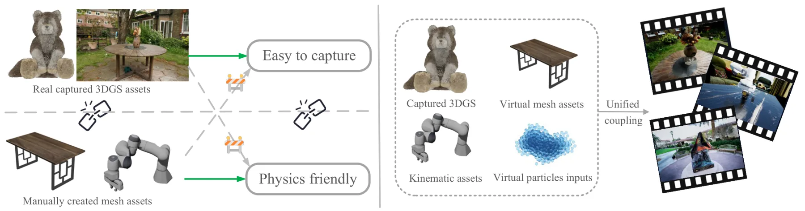
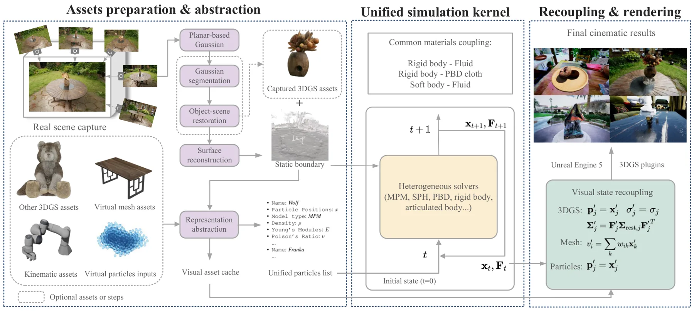
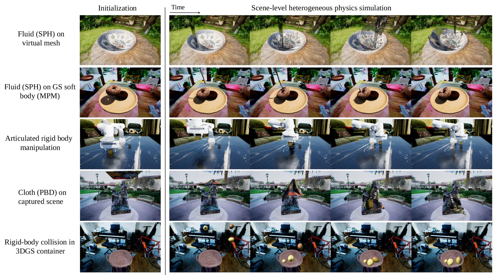
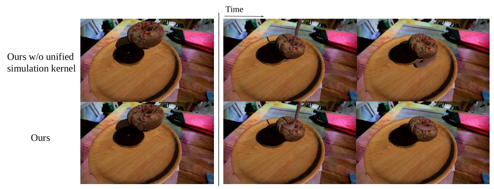
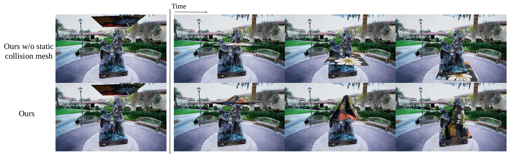
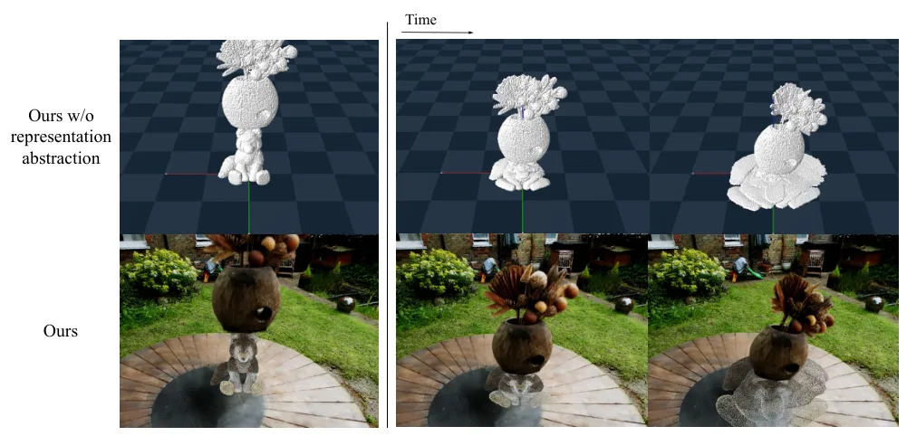
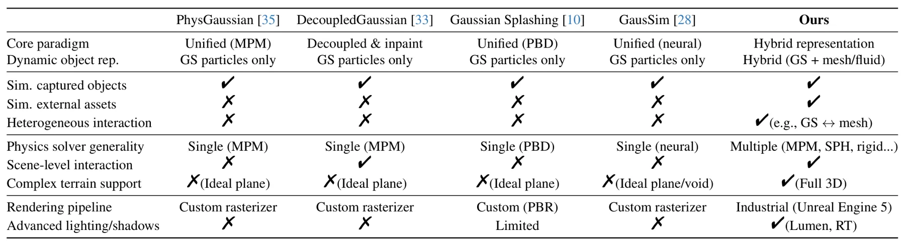

基于 3D 高斯泼溅的场景级异构物理仿真Scene-Level Heterogeneous Physics Simulation with 3D Gaussian Splats
与 3DGS 场景表示、交互式三维资产和机器人仿真高度相关；亮点在于从渲染表示跨到统一物理表示。需后续确认开源计划、运行成本和复杂真实场景鲁棒性。
一句话工作总结
把 3DGS、网格和流体统一抽象为物理粒子，使捕获场景中的高斯资产能够参与真实交互和非刚体变形。
摘要
3D Gaussian Splatting 已能实现高质量实时渲染，但现有物理引擎难以直接理解 3DGS 表示，既有 physics-for-3DGS 方法也多停留在孤立物体与简单平面交互。本文提出 Representation Abstraction Framework，将 3DGS、虚拟网格、流体等异构资产统一翻译为物理粒子集合，并结合由场景捕获得到的静态碰撞边界，在求解器无关的物理内核中处理交互，再把物理结果映射回各自的视觉表示。该框架支持可变形 3DGS、标准 CG 资产与大规模捕获环境之间的双向耦合交互。
3D Gaussian Splatting (3DGS) has achieved state-of-the-art photorealistic rendering, but the representation gap prevents these assets from being physically interactive. Production-grade physics engines do not understand the 3DGS representation, while prior physics-for-3DGS methods are monolithic silos. These prior works are fundamentally limited, demonstrating only object-centric physics in isolated environments, such as on an ideal plane. They are incapable of interacting with complex static collision geometry or heterogeneous assets. We propose a novel framework that, for the first time, bridges this gap by enabling 3DGS assets to participate in scene-level, heterogeneous, multi-solver physical simulations. Our core contribution is a Representation Abstraction Framework that translates all diverse assets, including 3DGS, virtual meshes, and fluids, into a unified physical particle set. This abstraction is key to enabling complex behaviors, such as the non-rigid deformation of 3DGS assets, within a unified physics pipeline. This particle set, along with the static scene collision boundaries derived from scene capture, is processed within a solver-agnostic physics kernel. The physical results are then mapped back to drive each asset's specific visual reconstruction. This architecture unlocks capabilities impossible with prior art. We demonstrate complex, two-way interactions between deformable 3DGS assets, standard CG assets such as fluids and meshes, and large-scale captured static environments, showcasing realistic coupled phenomena that were previously unattainable.
中文解读摘录
- 英文题名：Scene-Level Heterogeneous Physics Simulation with 3D Gaussian Splats
- 作者：Xiaoyang Liu, Shangzhe Wu, Kai Han
- 类别/来源：cs.GR, cs.AI, cs.CV；rss:cs.GR；采集 score=12；阅读优先级=9.2/10。
- 一句话总结：把 3DGS、网格和流体统一抽象为物理粒子，使捕获场景中的高斯资产能够参与真实交互和非刚体变形。
- 为什么值得看：与 3DGS 场景表示、交互式三维资产和机器人仿真高度相关；亮点在于从渲染表示跨到统一物理表示。需后续确认开源计划、运行成本和复杂真实场景鲁棒性。
- 标签：3DGS、物理仿真、场景级交互、非刚体变形
- 链接：abs / PDF
图表/页面预览
{kind=link}

{kind=link}

{kind=link}

{kind=link}

{kind=link}

{kind=link}

{kind=link}
